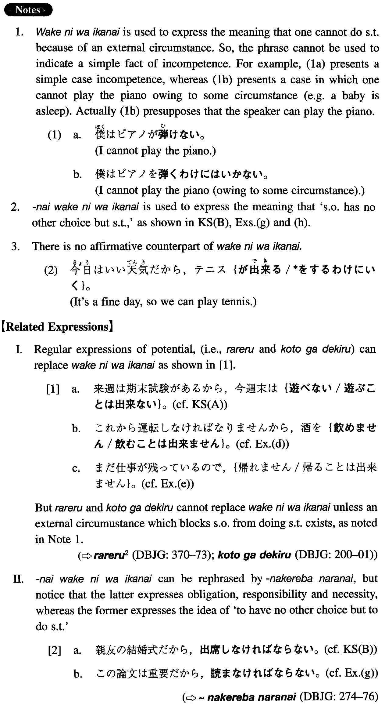

←
DoJG
→
わけにはいかない
(I. 581)
Example sentences
(ksa).
来週は期末試験があるから、今週末は遊んでいる
わけにはいかない
。
There will be final examinations next week, so I cannot fool around this weekend.
(ksb).
親友の結婚式だから、出席しない
わけにはいかない
。
Since it is the wedding of my close friend I have no other choice but to attend it.
(a).
こんな高価な物を頂く
わけにはいきません
。
I have no reason to receive such an expensive gift.
(b).
私のような若い者がそんな会議に出席する
わけにはいきません
。
A young person like me cannot attend such a meeting.
(c).
まだ定職もないんだから、結婚する
わけにはいかない
んですよ。
I don't have a regular job, so I cannot get married.
(d).
これから運転しなければなりませんから、酒を飲む
わけにはいきません
。
I have to drive from now, so I cannot drink.
(e).
まだ仕事が残っているので、帰る
わけにはいきません
。
I still have work to do, so I cannot go home.
(f).
これは秘密なので、話す
わけにはいきません
。
This is a secret, so I cannot talk about it.
(g).
この論文は重要だから、読まない
わけにはいかない
。
This paper is important, so I have no choice but to read it.
(h).
上司の命令なのだから、報告書を書かない
わけにはいかない
。
It is my boss's order, so I cannot avoid writing this report.
Formation
(i)
Vinformal nonpast
わけにはいかない
行く
わけにはいかない
Someone cannot go
(ii)
Vinformal negative nonpast
ないわけにはいかない
読ま
ないわけにはいかない
Someone has no other choice but to read something
